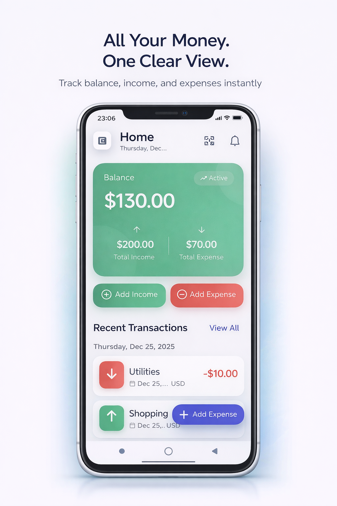
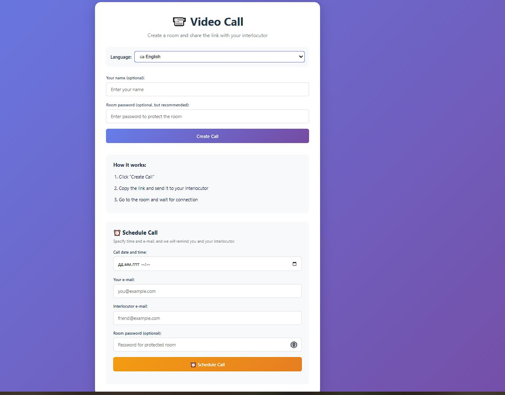
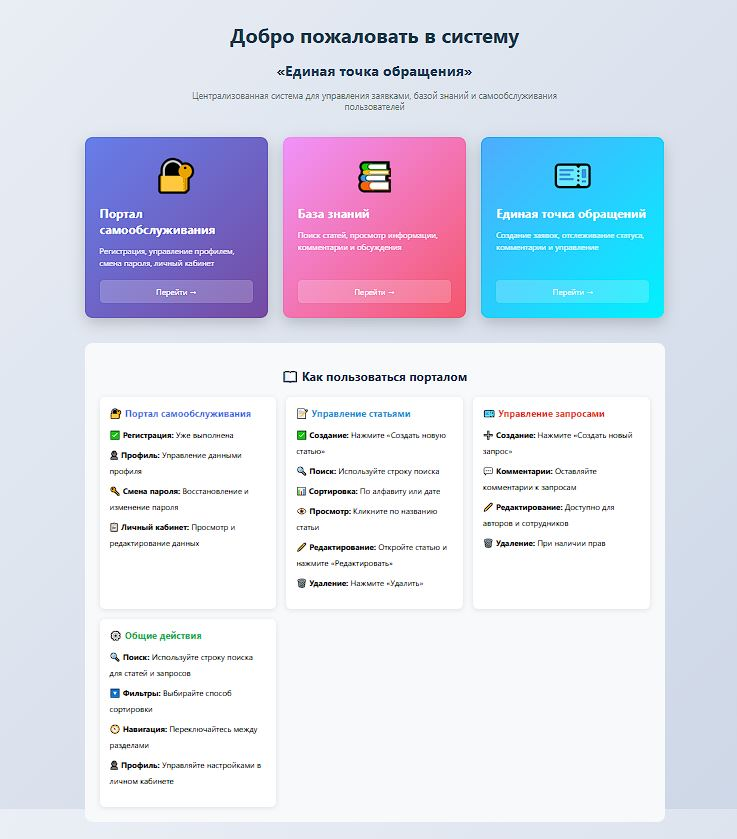
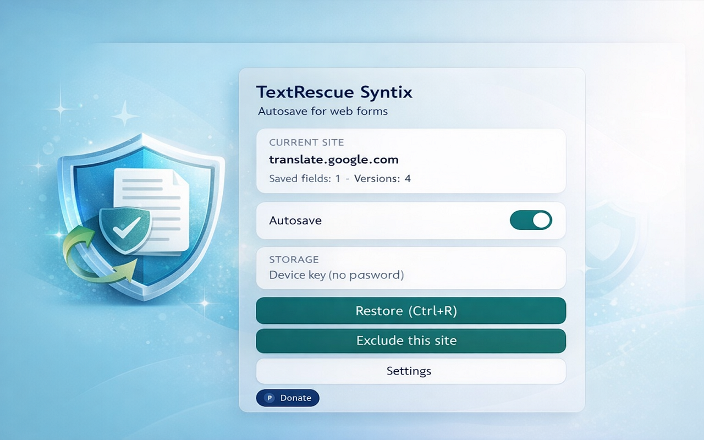
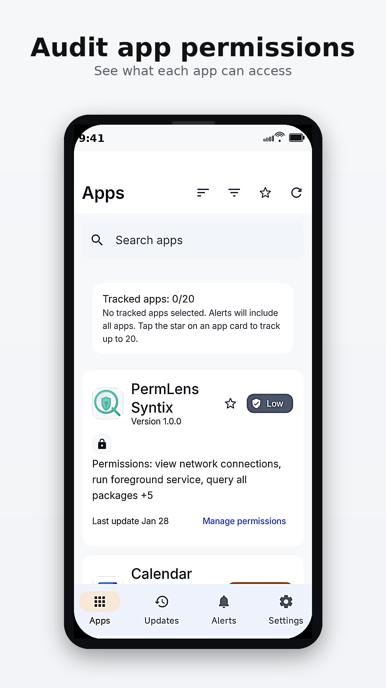

Personal Financial Management
This project is a comprehensive standalone mobile application to manage personal finances, developed with Flutter. The app was designed to give users full control over your personal finances without relying on an internet connection. It allows users to track income and expenses, manage multiple financial accounts, plan budgets and set long-term financial goals while keeping all data secure stored on the device. The application is focused on providing a clear and structured perceptions of financial activities. Users can record transactions with detailed metadata such as categories, notes and dates, manage multiple accounts at the same time and automate recurring income or expenses, such as wages or subscriptions. Budgeting and goal tracking help users track spending limits and visualize progress toward goals savings, making financial planning intuitive and practical. Particular attention was paid to analytics and data visualization. The app includes interactive charts and reports that help users analyze the cost structure over time, compare different periods and understand costs at the category level. Balance sheet trends, cost allocation and financial dynamics are presented in a clear and readable format, which allows you to take reasonable financial solutions without overloading the user. To simplify data management, appendix n supports multiple input and export options. Users can scan receipts using the device's camera, automatically import transaction data from bank SMS notifications and view calendar-based activity in the interface. Financial data can be exported to CSV or PDF formats for external analysis or record keeping, while keeping the workflow offline. Safety and usability were key priorities at throughout the development process. The app includes pin-based security and biometric authentication for secure access, supports multiple interface languages and offers premium subscription model through in-app purchases. Built-in support with a chat-based ticket interface ensures that users can easily request help if needed. From a technical point of view, the application follows the principles of pure architecture with clear separation between data, domain, and view levels. State management is performed using a BLoC template for providing predictable behavior, scalability, and testability. High-performance on-premises database provides fast queries and smooth operation, and careful optimization ensures quick response user interface and stable animation on different devices. This project demonstrates the development of a ready-to-use mobile application that combines robust offline data processing, advanced analytics, robust security practices, and impeccable user interface It reflects an emphasis on real-world usability, performance and supported architecture in a modern cross-platform mobile product development

📹 Video Call Application
This project is a modern web-based video conferencing application that I built from scratch. It combines real-time communication capabilities with advanced AI features, making online meetings more productive and user-friendly. The application supports secure video and audio calls, screen sharing, file exchange, and real-time chat in a smooth and responsive interface. What sets this application apart is its intelligent assistance layer. Using real-time speech recognition and server-side processing, the system automatically transcribes conversations, extracts key action items, and generates concise meeting summaries which can be emailed to participants. I also implemented multi-language support, allowing users to communicate and receive translated subtitles in several major languages. The technical architecture ensures reliable connectivity for both small and larger group calls. It utilizes a hybrid WebRTC approach: simple peer-to-peer connections for one-on-one communication and a scalable SFU (Selective Forwarding Unit) for group calls, keeping bandwidth optimized while maintaining high quality. To enhance the user experience, I integrated features such as gesture recognition and smart noise suppression using modern web APIs and machine-learning models. In addition, the app includes built-in scheduling tools with automated reminders, secure room access controls, and persistent preferences like language and theme selection. It was designed with responsive layouts and touch-friendly controls so it works seamlessly across desktops, tablets, and mobile devices without sacrificing performance. This video call solution not only provides a complete communication platform, but also leverages modern AI and web technologies to enhance productivity and ease of use in real time.

Single Point of Contact
This project is a comprehensive internal platform composed of three tightly integrated applications: a knowledge base, a self-service portal, and a CRM system. Together, they form a unified environment for managing organizational knowledge, handling internal requests, and supporting structured interaction between users, teams, and administrators. The knowledge base module is designed as a CMS-like system for creating, organizing, and maintaining internal documentation. It allows teams to publish rich articles with multimedia content, assign authorship, categorize information, and automatically track publication dates. Advanced search and filtering capabilities make information easily accessible, while built-in commenting enables collaborative discussion directly within articles, supporting continuous knowledge improvement. The self-service portal provides users with a structured way to submit and track internal requests. These requests follow defined workflows, move through multiple statuses, and support discussion through comments, making the portal suitable for internal support, technical inquiries, content requests, and operational communication. By combining requests with contextual knowledge articles, the system reduces repetitive questions and improves response efficiency. The CRM component focuses on user management, roles, and organizational structure. It introduces role-based access control with multiple permission levels, ensuring secure separation of responsibilities across standard users, support staff, moderators, and administrators. Extended user profiles store organizational data such as departments, positions, and contact information, allowing the system to reflect real-world company hierarchies and workflows. User onboarding is managed through an approval-based registration process. New users submit access requests that are reviewed by authorized administrators, with full tracking of approval decisions, rejection reasons, and automated email notifications. This controlled onboarding flow ensures security, accountability, and proper access governance across the platform. From a technical perspective, the system is built with Django and Django REST Framework, following the Model-View-Template architectural pattern. The platform is structured into modular applications with clear separation of concerns, optimized database access, and well-defined relationships between entities. PostgreSQL is used in production for reliable data persistence, while static and media assets are handled efficiently and securely. Security was treated as a foundational requirement throughout development. The platform enforces HTTPS in production, applies strict session and cookie security policies, protects all forms with CSRF safeguards, and validates user input at multiple levels. Sensitive configuration is handled through environment variables, and the system incorporates best practices to mitigate common web vulnerabilities. This project represents a scalable, secure, and maintainable internal platform that combines knowledge management, self-service workflows, and CRM-style user administration into a single cohesive solution. It demonstrates strong expertise in backend architecture, system design, access control, and the development of real-world enterprise applications that support complex organizational processes.

TextRescue Syntix
TextRescue Syntix quietly captures and snaps drafts from any text input or editable region, letting users restore the latest version or scroll through an encrypted history panel without losing work when tabs crash or reload. The floating panel and Ctrl+R shortcut drop the saved text back in place (with optional confirmation), and limiters keep storage bounded by field, site, or global caps. Tracks only allowable fields, skips password/OTP heuristics, and respects allowlist/blocklist settings so sensitive contexts remain untouched. Includes a full settings screen with debounce intervals, snapshot thresholds, storage limits, per-site caps, master-password/device-key locking, and easy buttons for clearing all or single-site data. Background service worker uses Manifest V3, Chrome runtime/storage/scripting APIs, and Web Crypto + IndexedDB to encrypt snapshots with AES-GCM, enforce auto-lock, and trim old entries by field or site. Content and popup scripts hook into DOM input/focus events, inject the restore panel with interactive history items (insert/copy/delete), and sync updates via chrome.runtime.sendMessage.

PermLens Syntix
PermLens Syntix is an Android privacy and security audit app that builds a complete inventory of all installed applications, shows each app’s declared permissions in a clear, searchable interface, and tracks permission changes after updates so users can quickly spot when an app gains new sensitive access (such as location, camera, microphone, or contacts) and decide whether to keep it, restrict it, or uninstall it. It works fully on-device: the app reads the installed package list and each app’s declared permissions via the Android PackageManager, stores periodic snapshots locally, and automatically compares “before/after” states when apps are updated to generate a permission-diff history, with filters and categories that highlight the most sensitive permissions first.